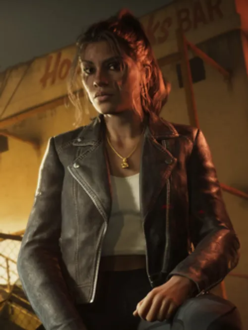
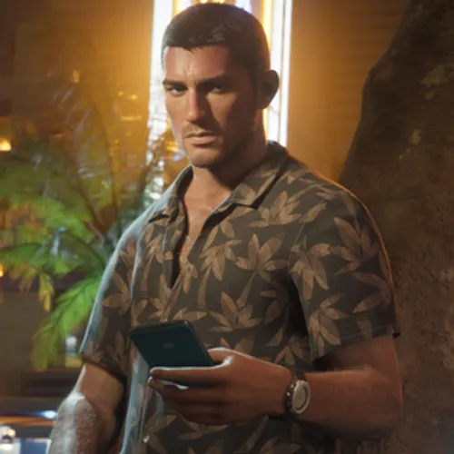
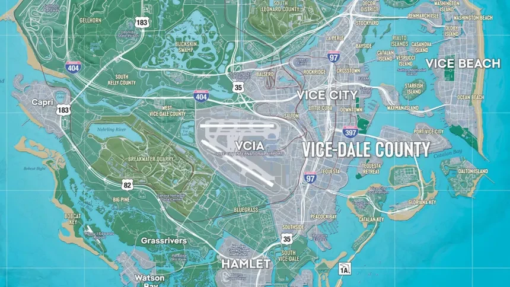

0dni
00godz.
00min
00sek
Nieoficjalny fanpage · społeczność GTA VI
Welcome to Leonida
Wszystko o Lucii, Jasonie i najbardziej słonecznym (i najbardziej podejrzanym) stanie w Ameryce. Fakty sprawdzamy, spekulacje oznaczamy, spoilery chowamy.
Para, która ma przeciwko sobie cały stan. Informacje w kartach pochodzą z trailerów i opisów postaci opublikowanych przez Rockstar – wszystko inne jest wyraźnie oznaczone.

Wojowniczka z przeszłością, która chce już tylko mądrych ruchów.
Twarda, zdeterminowana i lojalna wobec bliskich. Z materiałów Rockstara wyłania się obraz osoby, która nauczyła się walczyć wcześnie i nie cofa się, gdy chodzi o rodzinę – ale po pobycie za kratami próbuje działać rozważniej.
Według opisu Rockstara ojciec uczył Lucię walki, odkąd tylko nauczyła się chodzić. Walka o rodzinę zaprowadziła ją do Leonida Penitentiary, a z więzienia wydostała się dzięki szczęściu. Pierwszy trailer otwiera scena z Lucią w więziennym kombinezonie.
Po wyjściu na wolność jej drogi łączą się z Jasonem – razem wpadają w kłopoty, które ciągną się przez cały stan.

Chciałby łatwego życia. Życie ma inne plany.
Spokojniejszy z dwójki – marzy o prostym, bezproblemowym życiu, ale wychował się wśród kombinatorów i oszustów, więc kłopoty same go znajdują. Zna się na „robocie”, którą zna najlepiej, i zaczyna myśleć, że czas na zmianę.
Według opisu Rockstara Jason dorastał wśród drobnych przestępców. Próbował uciec od trudnej młodości, wstępując do armii, ale ostatecznie wylądował w Leonida Keys, gdzie pracuje dla lokalnych przemytników narkotyków.
Jednym z jego zleceniodawców jest Brian Heder – weteran przemytu, u którego Jason mieszka.
Kumpel Jasona i współpracownik Briana. Woli siedzieć w domu i jest przekonany, że wszyscy go inwigilują.
Lokalna legenda Vice City, który przeszedł z ulicy do biznesu – ma m.in. klub i studio nagraniowe Only Raw Records.
Człowiek, który chce zrobić karierę w muzyce – najlepiej jako menedżer obiecujących artystów.
Duet Bae-Luxe i Roxy – przyjaciółki, które wypłynęły dzięki viralom w mediach społecznościowych.
Doświadczony i pewny siebie specjalista od napadów, który szuka wspólników gotowych zaryzykować.
Stary wyjadacz przemytu w Leonida Keys. Zleca Jasonowi robotę i wynajmuje mu dach nad głową.
Opisy postaci drugoplanowych to nasze streszczenia materiałów Rockstara z 2025 roku.
Leonida to fikcyjny stan wzorowany na Florydzie. Jego sercem jest powracające do serii Vice City – neony, plaże, jachty i ciemna strona słońca. Kliknij punkt na mapie albo kartę regionu, żeby dowiedzieć się więcej.

Powrót legendarnego miasta: plaże, kluby, wieżowce i ostry kontrast bogactwa z ulicą.
Wyspa na wschód od centrum, z plażami Ocean Beach i Washington Beach.
Miejscowość na południe od Vice City, obok zakładu karnego Hamlet Correctional Institution.
Miasto na zachodnim wybrzeżu, przy trasie 183.
Łańcuch wysp połączonych mostami – to tutaj Jason pracuje dla przemytników.
Rozległe mokradła z dziką przyrodą – odpowiednik Everglades.
Podupadłe miasteczko portowe, które najlepsze czasy ma dawno za sobą.
Przemysłowe serce regionu – fabryki, rafineria i lokalne gangi motocyklowe.
Park narodowy z lasami i szlakami – dzika północ Leonidy.
Kadry z życia w Leonidzie. Kliknij, aby powiększyć. Więcej zdjęć – w sekcji Galeria.
Rozdziały oparte na tym, co Rockstar pokazał w trailerach i opisach. Każdy blok ma etykietę: Potwierdzone albo Spekulacja.
Jason i Lucia od zawsze wiedzą, że los gra przeciwko nim. Kiedy z pozoru łatwy skok idzie nie tak, lądują po najciemniejszej stronie najbardziej słonecznego miejsca w Ameryce – w samym środku przestępczego spisku obejmującego całą Leonidę. Żeby wyjść z tego żywo, muszą polegać na sobie bardziej niż kiedykolwiek.
Historia Lucii zaczyna się w Leonida Penitentiary. Pierwszy trailer otwierają ujęcia z więzienia i rozmowa o tym, jak tam trafiła.
Lucia w pomarańczowym kombinezonie odpowiada na pytania o swoją sytuację. To pierwsza scena, jaką kiedykolwiek pokazano z GTA VI.
Według opisu postaci Lucia wydostaje się z więzienia dzięki „czystemu szczęściu”, a nie dzięki własnemu planowi – i obiecuje sobie od teraz tylko rozważne ruchy.
Po służbie w armii Jason osiada w Leonida Keys. Pracuje dla miejscowych przemytników, m.in. dla Briana Hedera, w towarzystwie kumpla Cala.
Drugi trailer pokazuje Jasona w Keys – łodzie, wyspy i ludzi, z którymi robi interesy.
Opis Rockstara sugeruje, że Jason ma dość dotychczasowego życia i rozważa „coś nowego” – to moment, w którym jego droga krzyżuje się z Lucią.
Rockstar wprost mówi o „pewnym skoku, który poszedł nie tak” – to punkt zapalny całej historii.
Nieudany skok wciąga parę w świat znacznie groźniejszy niż drobne przestępstwa – według opisu Rockstara od tej chwili muszą polegać wyłącznie na sobie.
Akcja rozlewa się na cały stan. Para trafia w sam środek przestępczej sieci powiązań sięgającej od Keys po Vice City.
Postacie przedstawione przez Rockstara – Raul Bautista, Boobie Ike, Dre'Quan Priest czy duet Real Dimez – to ludzie z różnych światów Leonidy. Ich dokładne role w fabule poznasz w grze.
Wszystko poniżej to teorie fanów, a nie informacje od Rockstara.
Seria miała już wybór zakończenia (GTA V), dlatego część graczy spodziewała się podobnego rozwiązania. Spekulacja
Popularny wątek dyskusji – czy zaufanie między Lucią a Jasonem przetrwa do końca. Spekulacja
Gra wyszła 19 listopada 2026. Szczegółowych opisów misji z gotowej gry celowo tu nie streszczamy – żeby nikomu nie zepsuć zabawy i nie podawać niesprawdzonych informacji.
Fakty, easter eggi i detale wyłapane przez społeczność. Filtruj według typu.
Kadry i grafiki z GTA VI. Kliknij, aby powiększyć – w powiększeniu działają strzałki, Esc i przesuwanie palcem.
Zdjęcia należą do ich autorów (m.in. © Rockstar Games) i są pokazane wyłącznie w celach fanowskich. Kolejne dodasz do folderu img/galeria i tablicy GALLERY w pliku script.js.
Oś czasu najważniejszych wydarzeń wokół GTA VI – od potwierdzenia produkcji do premiery.
Sprawdź swoją wiedzę i mierz, ile godzin spędzasz w Leonidzie.
10 losowych pytań z puli. Wszystkie odpowiedzi oparte na potwierdzonych informacjach.
Włącz stoper, gdy odpalasz GTA VI. Sesje zapisują się lokalnie na tym urządzeniu.